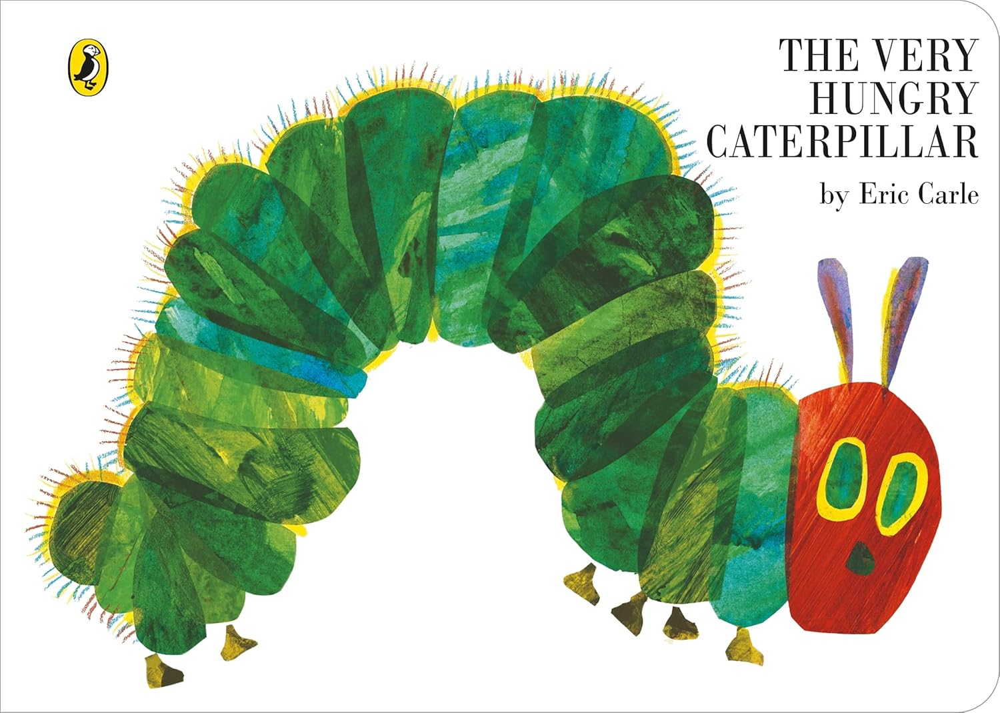

arrow_back
All prototypes
9:41
signal_cellular_alt
wifi
battery_full
arrow_back
New book
person

Change photo
Name
Author
Play in order
Kids can play any page's audio in any order
Recording
Add
Nothing recorded yet.
add
Record Front Page
Record next audio
Link sticker
home
Home
mic
Create
auto_stories
Library
Front Page
close
Tap to start
00:00 / 20:00
undo
mic
Record next audio
Link to a sticker